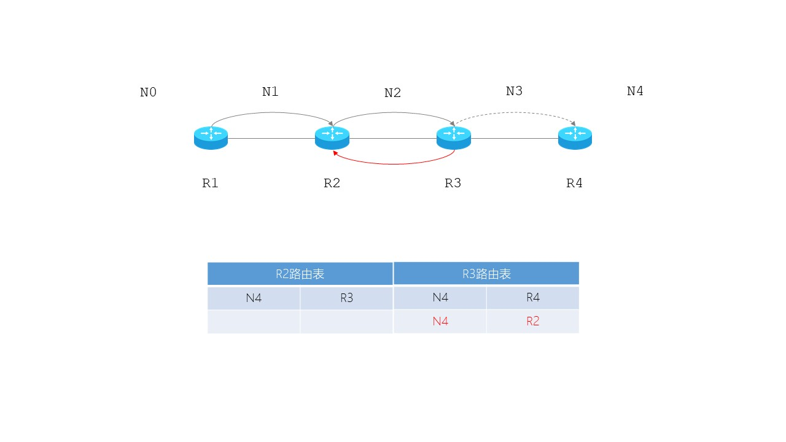

- 版本VER
- 0100，表示IP v4
- 首部长度THL
- 以4字节为单位
- 最小值为0101，所以最短首部长度为：5*4=20字节
- 最大值为1111，所以最大首部长度为：(24-1)*4=15*4=60字节
- 总长度TL
- 以字节位单位，长度为16bit
- 首部和数据部分总和；最大数值为1111 1111 1111 1111，所以最大长度为216-1=65535字节
- 以太网规定：IP数据报的最大传输单元MTU长度为1500字节；长度超过MTU就必须分片，单独封帧再传输
- 片偏移部分
- 以8字节为单位，长度为13bit
- 标识ID：每产生一个数据报，就加1，充当计算器的功能
- FLAGS：3bit，包括：MF+DF+保留位0；MF：More Fragment；DF：Don’t Fragment；
- 生存时间TTL
- 8 bit，以秒为单位，最大生存时间是255秒
- 早期为时间；现在为可通过的路由数/跳数；每次转发时就减1；如果为0就丢弃，不转发
- 防止IP数据报在网络中无限制的兜圈子
- 协议PRO
- 数据部分是何种协议，如ICMP、TCP、UDP、OSPF等
- 首部校验和
- 每经过一个路由器，都要重新计算
- 为加快转发速度，IPv6中不再计算
-
| 4 |
4 |
8 |
16 |
| 版本VER |
首部长度THL |
区分服务DSCP |
总长度TL |
| 标识ID |
标志FLAG |
片偏移FRAG OFFSET |
| 生存时间TTL |
协议PRO |
首部校验和CHKSUM |
| 源地址SRC |
| 目标地址DST |
| 数据DATA |
- 表1 IP数据报格式
-

- 图1 TTL的重要性
-
| 协议名称 |
ICMP |
IGMP |
TCP |
UDP |
IPv6 |
OSPF |
| 值 |
1 |
2 |
6 |
17 |
41 |
89 |
- 表2 常用协议字段
- [案例分析]
- 已经某IP报首部字段THL为0101，总长度字段TL为0000 0011 1111 1100，求数据部分字段DATA的长度。
- 解
- 首部长度为(0101)2*4 = 5*4 = 20 字节
- 总长度为(0000 0011 1111 1100)2 = 1020 字节
- 故：数据部分长度为：总长度-首部长度 = 1020-20 = 1000 字节
- [案例分析]
- 已知采用固定长度首部的数据报，数据部分位3800字节，如何分片？（分片不超过1420字节）
-
|
总长度TL |
标识ID |
更多分片MF |
不要分片DF |
FRAG OFFSET |
| 原始数据报 |
20+3800 |
12345 |
0 |
0 |
0 |
| 分片1 |
20+1400 |
1234 |
1 |
0 |
0 |
| 分片2 |
20+1400 |
1234 |
1 |
0 |
1400/8 |
| 分片3 |
20+1000 |
1234 |
0 |
0 |
2800/8 |
- 表3 IP数据报的分片